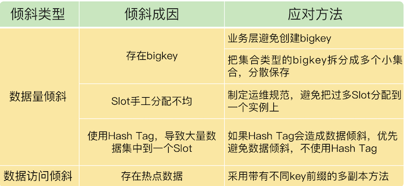

第七章 Redis Cluster集群介绍及管理
1、本章小结
1-1 Redis主从同步与故障切换的三个坑
Redis 主从库同步时可能出现的 3 个坑，分别是主从数据不一致、读取到过期数据和不合理配置项导致服务挂掉。

关于主从库数据不一致的问题： Redis 中的 slave-serve-stale-data 配置项设置了从库能否处理数据读写命令，你可以把它设置为 no。这样一来，从库只能服务 INFO、SLAVEOF 命令，这就可以避免在从库中读到不一致的数据了。
这个配置项和 slave-read-only 的区别，slave-read-only 是设置从库能否处理写命令，slave-read-only 设置为 yes 时，从库只能处理读请求，无法处理写请求，你可不要搞混了。
1-2 脑裂导致数据丢失
脑裂是指在主从集群中，同时有两个主库都能接收写请求。在 Redis 的主从切换过程中，如果发生了脑裂，客户端数据就会写入到原主库，如果原主库被降为从库，这些新写入的数据就丢失了。
脑裂发生的原因主要是原主库发生了假故障，总结下假故障的两个原因。
- 和主库部署在同一台服务器上的其他程序临时占用了大量资源（例如 CPU 资源），导致主库资源使用受限，短时间内无法响应心跳。其它程序不再使用资源时，主库又恢复正常。
- 主库自身遇到了阻塞的情况，例如，处理 bigkey 或是发生内存 swap，短时间内无法响应心跳，等主库阻塞解除后，又恢复正常的请求处理了。
为了应对脑裂，可以在主从集群部署时，通过合理地配置参数 min-slaves-to-write 和 min-slaves-max-lag，来预防脑裂的发生。
在实际应用中，可能会因为网络暂时拥塞导致从库暂时和主库的 ACK 消息超时。在这种情况下，并不是主库假故障，我们也不用禁止主库接收请求。
建议是，假设从库有 K 个，可以将 min-slaves-to-write 设置为K/2+1（如果 K 等于 1，就设为 1），将 min-slaves-max-lag 设置为十几秒（例如 10～20s），在这个配置下，如果有一半以上的从库和主库进行的 ACK 消息延迟超过十几秒，我们就禁止主库接收客户端写请求。
避免脑裂带来数据丢失的情况，而且，也不会因为只有少数几个从库因为网络阻塞连不上主库，就禁止主库接收请求，增加了系统的鲁棒性。
1-3 Redis Codis 集群方案
Codis 集群包含 codis server、codis proxy、Zookeeper、codis dashboard 和 codis fe 这四大类组件。
- codis proxy 和 codis server 负责处理数据读写请求，其中，codis proxy 和客户端连接，接收请求，并转发请求给 codis server，而 codis server 负责具体处理请求。
- codis dashboard 和 codis fe 负责集群管理，其中，codis dashboard 执行管理操作，而 codis fe 提供 Web 管理界面。
- Zookeeper 集群负责保存集群的所有元数据信息，包括路由表、proxy 实例信息等。这里，有个地方需要你注意，除了使用 Zookeeper，Codis 还可以使用 etcd 或本地文件系统保存元数据信息。
关于 Codis 和 Redis Cluster 的选型考虑，从稳定性成熟度、客户端兼容性、Redis 新特性使用以及数据迁移性能四个方面给你提供了建议。
我再给你提供一个 Codis 使用上的小建议：当你有多条业务线要使用 Codis 时，可以启动多个 codis dashboard，每个 dashboard 管理一部分 codis server，同时，再用一个 dashboard 对应负责一个业务线的集群管理，这样，就可以做到用一个 Codis 集群实现多条业务线的隔离管理了。
1-4 Redis支撑秒杀场景的关键技术和实践
秒杀场景有 2 个负载特征，分别是瞬时高并发请求和读多写少。Redis 良好的高并发处理能力，以及高效的键值对读写特性，正好可以满足秒杀场景的需求。
在秒杀场景中，我们可以通过前端 CDN 和浏览器缓存拦截大量秒杀前的请求。在实际秒杀活动进行时，库存查验和库存扣减是承受巨大并发请求压力的两个操作，同时，这两个操作的执行需要保证原子性。Redis 的原子操作、分布式锁这两个功能特性可以有效地来支撑秒杀场景的需求。
当然，对于秒杀场景来说，只用 Redis 是不够的。秒杀系统是一个系统性工程，Redis 实现了对库存查验和扣减这个环节的支撑，除此之外，还有 4 个环节需要我们处理好。
- 前端静态页面的设计。秒杀页面上能静态化处理的页面元素，我们都要尽量静态化，这样可以充分利用 CDN 或浏览器缓存服务秒杀开始前的请求。
- 请求拦截和流控。在秒杀系统的接入层，对恶意请求进行拦截，避免对系统的恶意攻击，例如使用黑名单禁止恶意 IP 进行访问。如果 Redis 实例的访问压力过大，为了避免实例崩溃，我们也需要在接入层进行限流，控制进入秒杀系统的请求数量。
- 库存信息过期时间处理。Redis 中保存的库存信息其实是数据库的缓存，为了避免缓存击穿问题，我们不要给库存信息设置过期时间。
- 数据库订单异常处理。如果数据库没能成功处理订单，可以增加订单重试功能，保证订单最终能被成功处理。
建议：秒杀活动带来的请求流量巨大，我们需要把秒杀商品的库存信息用单独的实例保存，而不要和日常业务系统的数据保存在同一个实例上，这样可以避免干扰业务系统的正常运行。
1-5 数据分布优化应对数据倾斜
数据倾斜的两种情况：数据量倾斜和数据访问倾斜。
造成数据量倾斜的原因主要有三个：
- 数据中有 bigkey，导致某个实例的数据量增加；
- Slot 手工分配不均，导致某个或某些实例上有大量数据；
- 使用了 Hash Tag，导致数据集中到某些实例上。
而数据访问倾斜的主要原因就是有热点数据存在，导致大量访问请求集中到了热点数据所在的实例上。
为了应对数据倾斜问题，四个方法，

如果已经发生了数据倾斜，我们可以通过数据迁移来缓解数据倾斜的影响。Redis Cluster 和 Codis 集群都提供了查看 Slot 分配和手工迁移 Slot 的命令，你可以把它们应用起来。
关于集群的实例资源配置，一个小建议：在构建切片集群时，尽量使用大小配置相同的实例（例如实例内存配置保持相同），这样可以避免因实例资源不均衡而在不同实例上分配不同数量的 Slot。
1-6 限制Redis Cluster规模的关键因素：通信开销
Redis Cluster 实例间以 Gossip 协议进行通信的机制。Redis Cluster 运行时，各实例间需要通过 PING、PONG 消息进行信息交换，这些心跳消息包含了当前实例和部分其它实例的状态信息，以及 Slot 分配信息。这种通信机制有助于 Redis Cluster 中的所有实例都拥有完整的集群状态信息。
但是，随着集群规模的增加，实例间的通信量也会增加。如果我们盲目地对 Redis Cluster 进行扩容，就可能会遇到集群性能变慢的情况。这是因为，集群中大规模的实例间心跳消息会挤占集群处理正常请求的带宽。而且，有些实例可能因为网络拥塞导致无法及时收到 PONG 消息，每个实例在运行时会周期性地（每秒 10 次）检测是否有这种情况发生，一旦发生，就会立即给这些 PONG 消息超时的实例发送心跳消息。
集群规模越大，网络拥塞的概率就越高，相应的，PONG 消息超时的发生概率就越高，这就会导致集群中有大量的心跳消息，影响集群服务正常请求。
建议，虽然我们可以通过调整 cluster-node-timeout 配置项减少心跳消息的占用带宽情况，但是，在实际应用中，如果不是特别需要大容量集群，我建议你把 Redis Cluster 的规模控制在 400~500 个实例。
假设单个实例每秒能支撑 8 万请求操作（8 万 QPS），每个主实例配置 1 个从实例，那么，400~ 500 个实例可支持 1600 万~2000 万 QPS（200/250 个主实例 *8 万 QPS=1600/2000 万 QPS），这个吞吐量性能可以满足不少业务应用的需求。
2、本章操作总结
2-1 Redis主从同步与故障切换的三个坑
第一个例子是使用 EXPIRE 命令，当执行下面的命令时，我们就把 testkey 的过期时间设置为 60s 后。
EXPIRE testkey 60
第二个例子是使用 EXPIREAT 命令，例如，我们执行下面的命令，就可以让 testkey 在 2020 年 10 月 24 日上午 9 点过期，命令中的 1603501200 就是以秒数时间戳表示的 10 月 24 日上午 9 点
EXPIREAT testkey 1603501200
protected-mode 配置项
在应用主从集群时，要注意将 protected-mode 配置项设置为 no，并且将 bind 配置项设置为其它哨兵实例的 IP 地址。 只有在 bind 中设置了 IP 地址的哨兵，才可以访问当前实例，既保证了实例间能够通信进行主从切换，也保证了哨兵的安全性。
如果设置了下面的配置项，那么，部署在 192.168.10.3/4/5 这三台服务器上的哨兵实例就可以相互通信，执行主从切换。
protected-mode no
bind 192.168.10.3 192.168.10.4 192.168.10.5
2-2 脑裂导致数据丢失
Redis 已经提供了两个配置项来限制主库的请求处理，分别是 min-slaves-to-write 和 min-slaves-max-lag。
min-slaves-to-write：这个配置项设置了主库能进行数据同步的最少从库数量；min-slaves-max-lag：这个配置项设置了主从库间进行数据复制时，从库给主库发送 ACK 消息的最大延迟（以秒为单位）。
可以把 min-slaves-to-write 和 min-slaves-max-lag 这两个配置项搭配起来使用，分别给它们设置一定的阈值，假设为 N 和T。
- 假设我们将
min-slaves-to-write设置为 1 - 把
min-slaves-max-lag设置为 12s - 把哨兵的
down-after-milliseconds设置为 10s
2-5 数据分布优化应对数据倾斜
比如说，我们执行 CLUSTER SLOTS 命令查看 Slot 分配情况。命令返回结果显示，Slot 0 到 Slot 4095 被分配到了实例 192.168.10.3 上，而 Slot 12288 到 Slot 16383 被分配到了实例 192.168.10.5 上。
127.0.0.1:6379> cluster slots
1) 1) (integer) 0
2) (integer) 4095
3) 1) "192.168.10.3"
2) (integer) 6379
2) 1) (integer) 12288
2) (integer) 16383
3) 1) "192.168.10.5"
2) (integer) 6379
如果某一个实例上有太多的 Slot，就可以使用迁移命令把这些 Slot 迁移到其它实例上。在 Redis Cluster 中，我们可以使用 3 个命令完成 Slot 迁移。
CLUSTER SETSLOT：使用不同的选项进行三种设置，分别是设置 Slot 要迁入的目标实例，Slot 要迁出的源实例，以及 Slot 所属的实例。CLUSTER GETKEYSINSLOT：获取某个 Slot 中一定数量的 key。MIGRATE：把一个 key 从源实例实际迁移到目标实例。 4 假设我们要把 Slot 300 从源实例（ID 为 3）迁移到目标实例（ID 为 5），那要怎么做呢？
实际上，可以分成 5 步。
- 第 1 步，先在目标实例 5 上执行下面的命令，将 Slot 300 的源实例设置为实例 3，表示要从实例 3 上迁入 Slot 300。
CLUSTER SETSLOT 300 IMPORTING 3
- 第 2 步，在源实例 3 上，我们把 Slot 300 的目标实例设置为 5，这表示，Slot 300 要迁出到实例 5 上，如下所示：
CLUSTER SETSLOT 300 MIGRATING 5
- 第 3 步，从 Slot 300 中获取 100 个 key。因为 Slot 中的 key 数量可能很多，所以我们需要在客户端上多次执行下面的这条命令，分批次获得并迁移 key。
CLUSTER GETKEYSINSLOT 300 100
- 第 4 步，我们把刚才获取的 100 个 key 中的 key1 迁移到目标实例 5 上（IP 为 192.168.10.5），同时把要迁入的数据库设置为 0 号数据库，把迁移的超时时间设置为 timeout。我们重复执行 MIGRATE 命令，把 100 个 key 都迁移完。
MIGRATE 192.168.10.5 6379 key1 0 timeout
最后，我们重复执行第 3 和第 4 步，直到 Slot 中的所有 key 都迁移完成。
从 Redis 3.0.6 开始，你也可以使用 KEYS 选项，一次迁移多个 key（key1、2、3），这样可以提升迁移效率。
MIGRATE 192.168.10.5 6379 "" 0 timeout KEYS key1 key2 key3
对于 Codis 来说，我们可以执行下面的命令进行数据迁移。其中，我们把 dashboard 组件的连接地址设置为 ADDR，并且把 Slot 300 迁移到编号为 6 的 codis server group 上。
codis-admin --dashboard=ADDR -slot-action --create --sid=300 --gid=6
3、本章问题
3-1 问题：在主从集群中，我们把 slave-read-only 设置为 no，让从库也能直接删除数据，以此来避免读到过期数据。你觉得，这是一个好方法吗？
假设从库也能直接删除过期数据的话（也就是执行写操作），是不是一个好方法？其实，我是想借助这道题目提醒你，主从复制中的增删改操作都需要在主库执行，即使从库能做删除，也不要在从库删除，否则会导致数据不一致。
例如，主从库上都有 a:stock 的键，客户端 A 给主库发送一个 SET 命令，修改 a:stock 的值，客户端 B 给从库发送了一个 SET 命令，也修改 a:stock 的值，此时，相同键的值就不一样了。所以，如果从库具备执行写操作的功能，就会导致主从数据不一致。
即使从库可以删除过期数据，也还会有不一致的风险，有两种情况。
第一种情况是，对于已经设置了过期时间的 key，主库在 key 快要过期时，使用 expire 命令重置了过期时间，例如，一个 key 原本设置为 10s 后过期，在还剩 1s 就要过期时，主库又用 expire 命令将 key 的过期时间设置为 60s 后。但是，expire 命令从主库传输到从库时，由于网络延迟导致从库没有及时收到 expire 命令（比如延后了 3s 从库才收到 expire 命令），所以，从库按照原定的过期时间删除了过期 key，这就导致主从数据不一致了。
第二种情况是，主从库的时钟不同步，导致主从库删除时间不一致。
另外，当 slave-read-only 设置为 no 时，如果在从库上写入的数据设置了过期时间，Redis 4.0 前的版本不会删除过期数据，而 Redis 4.0 及以上版本会在数据过期后删除。但是，对于主库同步过来的带有过期时间的数据，从库仍然不会主动进行删除。
3-2 问题：假设我们将 min-slaves-to-write 设置为 1，min-slaves-max-lag 设置为 15s，哨兵的 down-after-milliseconds 设置为 10s，哨兵主从切换需要 5s，而主库因为某些原因卡住了 12s。此时，还会发生脑裂吗？主从切换完成后，数据会丢失吗？
- 主库卡住了 12s，超过了哨兵的
down-after-milliseconds 10s阈值，所以，哨兵会把主库判断为客观下线，开始进行主从切换。 - 因为主从切换需要 5s，在主从切换过程中，原主库恢复正常。
min-slaves-max-lag设置的是 15s，而原主库在卡住 12s 后就恢复正常了，所以没有被禁止接收请求，客户端在原主库恢复后，又可以发送请求给原主库。- 一旦在主从切换之后有新主库上线，就会出现脑裂。如果原主库在恢复正常后到降级为从库前的这段时间内，接收了写操作请求，那么，这些数据就会丢失了。
3-3 问题：假设 Codis 集群中保存的 80% 的键值对都是 Hash 类型，每个 Hash 集合的元素数量在 10 万~20 万个，每个集合元素的大小是 2KB。你觉得，迁移这样的 Hash 集合数据，会对 Codis 的性能造成影响吗？
答案：其实影响不大。虽然一个 Hash 集合数据的总数据量有 200MB ~ 400MB（2KB * 0.1M ≈ 200MB 到 2KB * 0.2M ≈ 400MB），但是 Codis 支持异步、分批迁移数据，所以，Codis 可以把集合中的元素分多个批次进行迁移，每批次迁移的数据量不大，所以，不会给源实例造成太大影响。
3-4 问题：假设一个商品的库存量是 800，我们使用一个包含了 4 个实例的切片集群来服务秒杀请求，我们让每个实例各自维护库存量 200，把客户端的秒杀请求分发到不同的实例上进行处理，你觉得这是一个好方法吗？
答案：这个方法是不是能达到一个好的效果，主要取决于，客户端请求能不能均匀地分发到每个实例上。如果可以的话，那么，每个实例都可以帮着分担一部分压力，避免压垮单个实例。
在保存商品库存时，key 一般就是商品的 ID，所以，客户端在秒杀场景中查询同一个商品的库存时，会向集群请求相同的 key，集群就需要把客户端对同一个 key 的请求均匀地分发到多个实例上。
为了解决这个问题，客户端和实例间就需要有代理层来完成请求的转发。例如，在 Codis 中，codis proxy 负责转发请求，那么，如果我们让 codis proxy 收到请求后，按轮询的方式把请求分发到不同实例上（可以对 Codis 进行修改，增加转发规则），就可以利用多实例来分担请求压力了。
为了解决这个问题，客户端和实例间就需要有代理层来完成请求的转发。例如，在 Codis 中，codis proxy 负责转发请求，那么，如果我们让 codis proxy 收到请求后，按轮询的方式把请求分发到不同实例上（可以对 Codis 进行修改，增加转发规则），就可以利用多实例来分担请求压力了。
3-5 问题：当有数据访问倾斜时，如果热点数据突然过期了，假设 Redis 中的数据是缓存，数据的最终值是保存在后端数据库中的，这样会发生什么问题吗?
答案：在这种情况下，会发生缓存击穿的问题，也就是热点数据突然失效，导致大量访问请求被发送到数据库，给数据库带来巨大压力。
我们可以采用如何解决缓存和数据库的数据不一致的缓存异常介绍的方法，不给热点数据设置过期时间，这样可以避免过期带来的击穿问题。
除此之外，我们最好在数据库的接入层增加流控机制，一旦监测到有大流量请求访问数据库，立刻开启限流，这样做也是为了避免数据库被大流量压力压垮。因为数据库一旦宕机，就会对整个业务应用带来严重影响。所以，我们宁可在请求接入数据库时，就直接拒接请求访问。
3-6 问题： 如果我们采用跟 Codis 保存 Slot 分配信息相类似的方法，把集群实例状态信息和 Slot 分配信息保存在第三方的存储系统上（例如 Zookeeper），这种方法会对集群规模产生什么影响吗？
答案：假设我们将 Zookeeper 作为第三方存储系统，保存集群实例状态信息和 Slot 分配信息，那么，实例只需要和 Zookeeper 通信交互信息，实例之间就不需要发送大量的心跳消息来同步集群状态了。这种做法可以减少实例之间用于心跳的网络通信量，有助于实现大规模集群。而且，网络带宽可以集中用在服务客户端请求上。
不过，在这种情况下，实例获取或更新集群状态信息时，都需要和 Zookeeper 交互，Zookeeper 的网络通信带宽需求会增加。所以，采用这种方法的时候，需要给 Zookeeper 保证一定的网络带宽，避免 Zookeeper 受限于带宽而无法和实例快速通信。
4、常见问题答疑
4-1 Redis 和 Memcached、RocksDB 的对比
Memcached 和 RocksDB 分别是典型的内存键值数据库和硬盘键值数据库，应用得也非常广泛。和 Redis 相比，它们有什么优势和不足呢？是否可以替代 Redis 呢？我们来聊一聊这个问题。
Redis 和 Memcached 的比较
和 Redis 相似，Memcached 也经常被当做缓存来使用。不过，Memcached 有一个明显的优势，就是它的集群规模可以很大。
Memcached 集群并不是像 Redis Cluster 或 Codis 那样，使用 Slot 映射来分配数据和实例的对应保存关系，而是使用一致性哈希算法把数据分散保存到多个实例上，而一致性哈希的优势就是可以支持大规模的集群。所以，如果我们需要部署大规模缓存集群，Memcached 会是一个不错的选择。
不过，在使用 Memcached 时，有个地方需要注意，Memcached 支持的数据类型比 Redis 少很多。Memcached 只支持 String 类型的键值对，而 Redis 可以支持包括 String 在内的多种数据类型，当业务应用有丰富的数据类型要保存的话，使用 Memcached 作为替换方案的优势就没有了。
如果你既需要保存多种数据类型，又希望有一定的集群规模保存大量数据，那么，Redis 仍然是一个不错的方案。
4-2 Redis 和 RocksDB 的比较
和 Redis 不同，RocksDB 可以把数据直接保存到硬盘上。这样一来，单个 RocksDB 可以保存的数据量要比 Redis 多很多，而且数据都能持久化保存下来。
除此之外，RocksDB 还能支持表结构（即列族结构），而 Redis 的基本数据模型就是键值对。所以，如果你需要一个大容量的持久化键值数据库，并且能按照一定表结构保存数据，RocksDB 是一个不错的替代方案。
不过，RocksDB 毕竟是要把数据写入底层硬盘进行保存的，而且在进行数据查询时，如果 RocksDB 要读取的数据没有在内存中缓存，那么，RocksDB 就需要到硬盘上的文件中进行查找，这会拖慢 RocksDB 的读写延迟，降低带宽。
在性能方面，RocksDB 是比不上 Redis 的。而且，RocksDB 只是一个动态链接库，并没有像 Redis 那样提供了客户端 - 服务器端访问模式，以及主从集群和切片集群的功能。所以，我们在使用 RocksDB 替代 Redis 时，需要结合业务需求重点考虑替换的可行性。
集群部署和运维涉及的工作量非常大，所以，我们一定要重视集群方案的选择。
集群的可扩展性是我们评估集群方案的一个重要维度，集群中元数据是用 Slot 映射表，还是一致性哈希维护的。如果是 Slot 映射表，那么，是用中心化的第三方存储系统来保存，还是由各个实例来扩散保存，这也是需要考虑清楚的。Redis Cluster、Codis 和 Memcached 采用的方式各不相同。
- Redis Cluster：使用 Slot 映射表并由实例扩散保存。
- Codis：使用 Slot 映射表并由第三方存储系统保存。
- Memcached：使用一致性哈希。